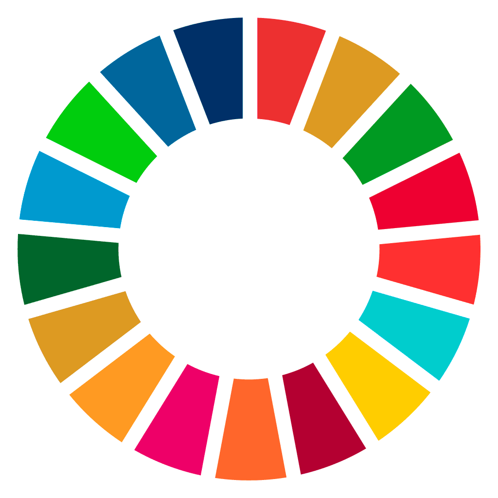

Els vuit primers Objectius de Desenvolupament Sostenible

Els objectius:
- ODS 1. Fi de la pobresa: Posar fi a la pobresa en totes les seves formes a tot arreu.
- ODS 2. Fam zero: Posar fi a la fam i la inanició, aconseguir la seguretat alimentària, millorar la nutrició i promoure una agricultura sostenible.
- ODS 3. Salut i benestar. Garantir una vida sana i promoure el benestar per a totes les edats.
- ODS 4. Educació de qualitat: Garantir una educació inclusiva per a tots i promoure oportunitats d'aprenentatge duradores que siguin de qualitat i equitatives.
- ODS 5. Igualtat de gènere: Aconseguir la igualtat de gènere a través de l'enfortiment de dones adultes i joves.
- ODS 6. Aigua neta i sanejament. Garantir la disponibilitat i una gestió sostenible de l'aigua i de les condicions de sanejament a tothom.
- ODS 7. Energia neta i assequible: Garantir l'accés de totes les persones a fonts d'energia assequibles, fiables, sostenibles i renovables.
- ODS 8. Treball digne i creixement econòmic: Promoure un creixement econòmic sostingut, inclusiu i sostenible, una ocupació plena i productiva, i un treball digne per a totes les persones.
Científics il·lustres:
- Isaac Newton 1643-1727
- Pitàgores 586 aC-490 aC
- Nikola Tesla 1856-1943
- Albert Einstein 1879-1955
- Charles Robert Darwin 1809-1882
Escriptors actuals:
- Neal Shusterman
- Hannu Rajaniemi
- Emma Newman
- Eric Nylund
- Nobuyuki Fukumoto
Llenguatges de programació:
- BASIC
- Lisp
- C++
- Python
- Rust